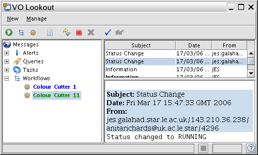
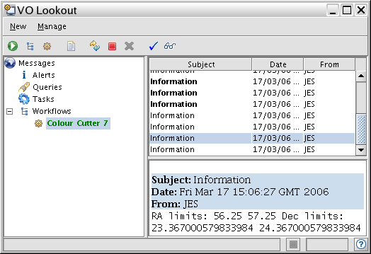
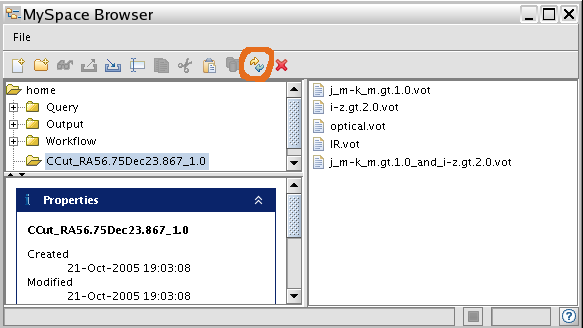
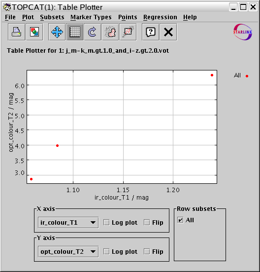

Colour Cutter Help
- Summary
- How to run the Colour Cutter
- Modifying the workflow
- Usage Notes:
- Development
- Colour Cutter Comments
Summary
This Astrogrid science service allows the user to select IR and optical objects by region and by colour. It is available via the Workbench.
Available Datasets
| Catalogue | Sky coverage | Bands (enter exact column names) | Wavelengths (approx, micron) | Row limit /source density |
|---|---|---|---|---|
| 2MASS | all sky | j_m h_m k_m | 1.24, 1.66, 2.16 | 10000 per 1 - 20 sq deg |
| USNO-B | all sky | B1Mag R1Mag NMag | 0.4, 0.7, 10, | 10000 per 0.2 - 1 sq deg |
| INT-WFS | region/band details | U B g V r i z Harris_R RGO_I | 0.36, 0.44, 0.48, 0.55, 0.63, 0.64, 0.77, 0.81, 0.91 | 2000 per 0.05 - 0.1 sq deg |
How to run the Colour Cutter
Using the Workbench
- Launch the AstroGrid Workbench (see Workbench Help)
- From the Workbench, select Parameterised Workflows > Run
- Select the Colour Cutter in the Template Chooser
{kind=link}
Input parameters
- Your first catalogue is 2MASS, your second must be chosen from USNO-B or INT-WFS - see Available Datasets
- Select a celestial region by central coordinate (J2000) plus size of box side; all units are decimal degrees and no curvature correction is made (so near the poles, the actual sky coverage will be compressed in the direction of Right Ascension).
- This is entered in decimal degrees e.g. 56.75,+23.867,1.0 (RA,Dec,Radius - no spaces) - check the coverage if the catalogue is not all-sky
- There are row limits for each datacentre which restrict the number of objects which can be returned by a single query. If you have stringent colour restrictions you may cover more sky but, if all objects in a region are returned, the limits are given (the source density is highest in mid-northern latitudes for the all-sky catalogues).
- Select the colour cut conditions for a pair of catalogues such that
- Band1_mag - Band2_mag > mag_limit
- This is entered as e.g. j_m,k_m,2.0 (exact band names as in the catalogue).
- You must select the first pair of bands from 2MASS and the second from one of the two optical catalogues.
- Selection cannot be made by comparing values in different catalogues but you can do this yourself using TopCat.
- If the catalogue gives uncertainties, values of Band2 are chosen to have errors in the range [0,0.5] but Band1 may be a non-detection or very uncertain (so the selection may be based on upper limits).
- The IR and optical colour-selected extracts are crossmatched using a 5 arcsec search radius as the 2MASS uncertainties dominate the position errors in most cases.
- The main output catalogue (in VOTable format) will contain the position of each object, its catalogue ID, and all available principal magnitude measurements (and uncertainties if given) plus the requested colours and uncertainties (if available).
- The ColourCutter creates a directory in your MySpace named according to the position e.g. CCut_RA56.7Dec23.867_1.0 to store these results.
Launching the workflow
- Click on OK at the bottom of the Task Editor window (resize it if necesary to see the button)
- You will be asked if you want to save a copy of the workflow.
- If you choose to do this in MySpace, select a folder and a file name. This will allow you to modify it for future use.
- Once the task is running the Lookout will appear and you can follow the progress of your query....

- Click on the 'glasses' icon to get a transcript.
- Highlight 'Information' to review the inputs being processed. 
{kind=link}
{kind=link}
Getting the results
When the status reaches 'COMPLETED' you can examine the results.
- You can launch the MySpace browser from the Workbench.
- Note the Refresh button (circled in red). 
- You should see a directory e.g. CCut_RA56.7Dec23.867_1.0 containing files labelled by the selection criteria - e.g.
j_m-k_m.gt.1.0.vot (IR); i-z.gt.2.0.vot (optical);
j_m-k_m.gt.1.0_and_i-z.gt.2.0.vot (matched, with colours added).- The output colour columns are called "ir_colour", "ir_col_err", "opt_colour" and "opt_col_err" (if present).
- If you re-run a query at the same position but a different colour selection the files will be written to the same directory and the intermediate files (IR.vot, optical.vot), which contain the colours for each data set separately, will be overwritten.
- You can save the results to your desktop or pass them directly to any application with access to MySpace e.g. TopCat, which can be used to sort the data, form more colours etc. and plot the output. 
{kind=link}
{kind=link}
Modifying the workflow
If you saved the workflow itself to MySpace (whilst launching it) you can use it as a template to construct your own workflows. The native format is XML but AstroGrid provides a handy graphical interface:
- Use the Workbench to launch the Workflow Builder
- In the Workflow Builder, use the File menu to load your workflow from MySpace.
- Double-click on an item to edit it
- See the Workflow Builder help for more information about how to add extra processes etc.
{kind=link}
Usage Notes:
Troubleshooting
Some common things to check:
- Use the Refresh button if nothing seems to be happening in the Lookout or you can't find your results in MySpace.
- Did you ask for a region without data in all the requested wavebands?
- The output directory name is based on the position, or you can review inputs in the Lookout. You can check coverage in the table above.
- If the INT-WFS catalogue was chosen, or if a very small box was used, are there data in the search box?
- Do your inputs correspond to the exact band names as used in the catalogue?
- If the separate IR and optical files seem OK but there is no final matched file, perhaps there were no objects in common. You can check ant match individual tables in TopCat
- If you selected a very large region the row limit may have been exceeded (see table above).
- If the Lookout status is 'ERROR', use the 'spectacles' to view the transcript and see where it went wrong.
- Site Status may tell you if archives are unavailable.
How it works
- The range of RA and Dec to be searched and the colour constraints are written into template queries, one for each catalogue. An additional constraint to select only Band2 values with small errors is added. The queries are in ADQL, an XML translation of SQL specialised for astronomy and solar science.
- For each catalogue selection returned to MySpace, a new column is written for the colour (Band1-Band2) and for the error (simply (sqrt[Band1err^2 + Band2err^2]), where available).
- The 'coloured' catalogue selections are crossmatched, finding all matches within 5 arcsec.
- The matched catalogue is returned to MySpace.
Development
Features which we hope to add include:
- Making it easier to discover if the region you want contains the bands you want, for catalogues with partial coverage;
- Adding more catalogues
- Allowing Band1 and Band2 to be from different catalogues
- Increasing the number of catalogue rows which can be processed at once.
Priorities will be informed by user feedback, so please let us know what you would like to see. For example, there could be additional inputs to determine the match radius or the error handling could be changed to exclude all catalogue measurements which were lower limits.
See UcPersistentTableJoin for an elegant solution involving querying and crossmatching separate tables in one query, using a MySpace database to handle the intermediate data (VOStore)
Other issues:
- Including on-the-fly source extraction/upper limit measurement from images
- Including user's own data from MySpace or URL
- Providing colour corrections so that the user can enter criteria in a standard photometric system
- Aperture corrections
- Selecting the optimum search radii for multi-catalogue cross-matches
- Astrometric alignment
For further suggestions and discussion of development please see the AstroGrid wiki page ColourCutterComments
Author: Anita Richards, amsr@jb.man.ac.uk
Last revised : 17 Mar 2006